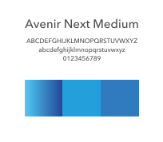

Project Overview
Controlco centralized the automation controls of over sixty properties for GGP, one of our largest clients. Their service package with us includes an in-browser UI for their operational teams to control facilities. The mobile app is a stripped down version of desktop app, but still contains summaries of each facility system: HVAC, lighting, alarms, and personnel.
Goals
While we already had a mobile version in place, I was asked to redesign it and bring it up to today’s modern standards for apps. The problem with the current app was that it wasn’t optimized— text was cut off and misaligned, tables seemed like they were infinitely nested, and the GUI didn’t look great in the VP’s eyes.
My goals were to upgrade the color palette, optimize the text, and to essentially make it perform like an app instead of a small desktop. I wanted to make sure that the app was clean and slick.
Methods
I approached the data modelers as well as clients about the type of information they needed to rely on for using these apps. This would give me some intel on what I can remove to make sure things are simple and clean.

With everyone’s input, I proceeded to create a low fidelity mockup to depict the flow of screens, starting from the login page. I wanted to focus on the general layout of information before moving not to even thinking about the colors.
I discussed the layout and presented this storyboard, walking stakeholders through the screens. They felt that it was a lot cleaner and optimized compared to what we’ve been using. With their approval, I started on a higher quality mockup on sketch and prototype in invision.
Blue is the color of technology while gradients represent something complex yet simple at the same time. It was perfect for this app, especially because the desktop version of the app is already using some shade of blue.
The next step was to focus on a color palette for the app. I incorporated the use of a blue gradient to make the app look cleaner. We used avenir for this product because it's an easier font to read.

A few screens of the mobile application.
The Takeaway
Working in the IoT big data space can be difficult already with the shear amount of data and content. Trying to fit this data on a smaller device is even more challenging, but in the end, I learned that these skills are applicable to any UI work. The VP of ops really liked the upgrade and thought that the product represented our company well.